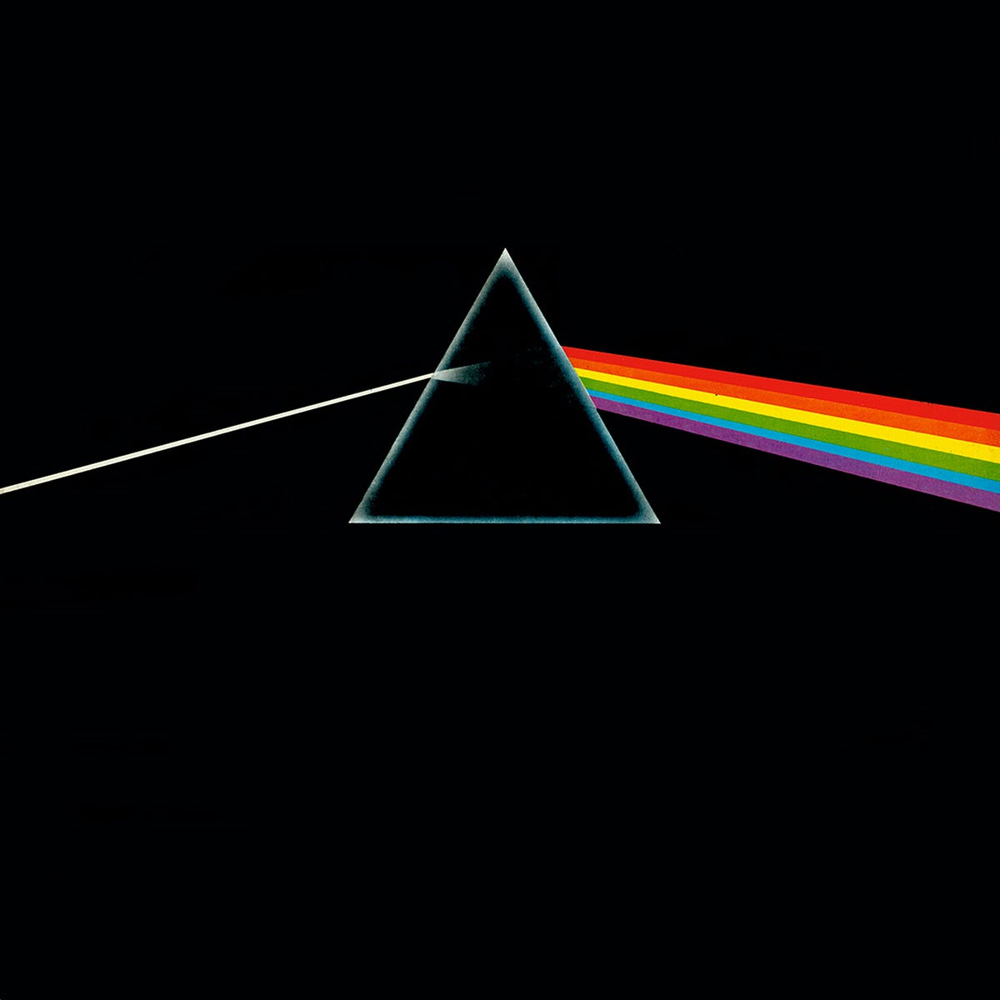
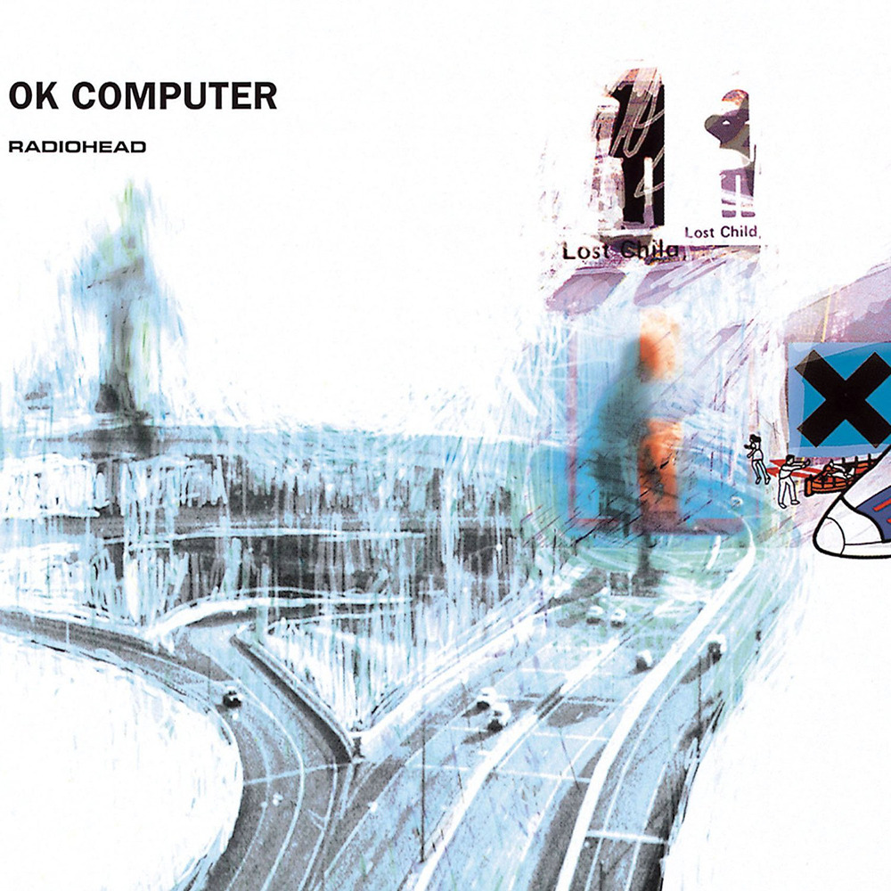
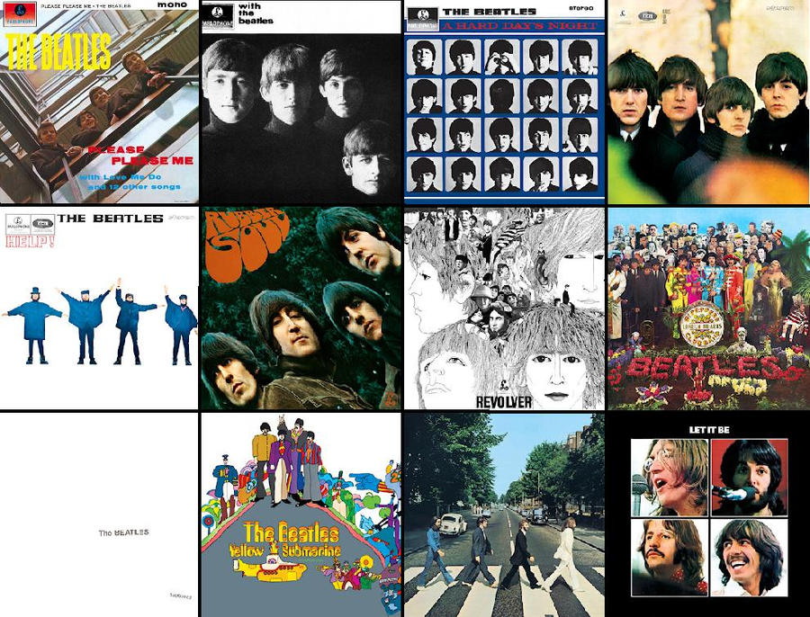
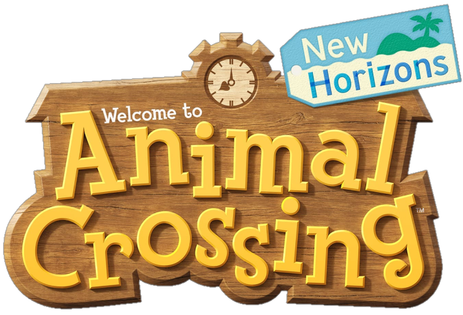
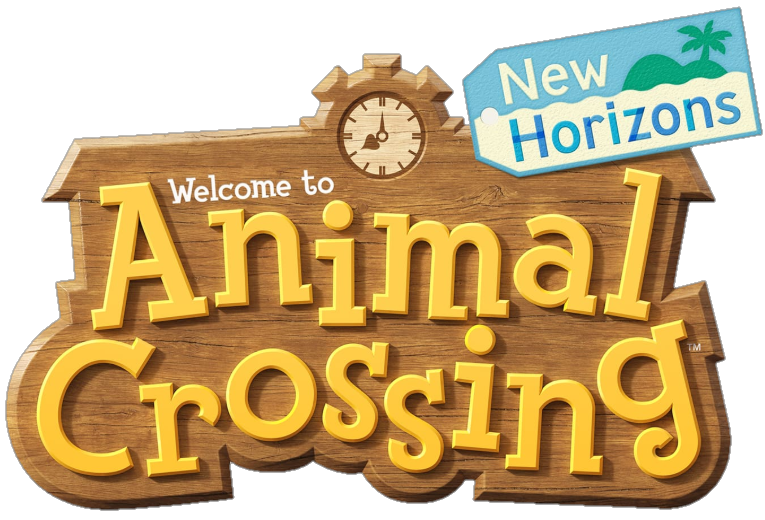

Holis, me declaro un Área IV enjoyer en un curso de Área I. Me gusta la filosofía, el arte (música, películas, videojuegos) así como la programación. Hasta cierto punto creo que estos 3 se pueden correlacionar así como complementar entre sí.
También, en mi tiempo libre me la paso jugando duolingo (aprendiendo como 4 idiomas) y construyendo la cdmx en minecraft jjjj, aquí dejo unas fotitos:
| NOMBRE | FOTO | EXPLICACION |
|---|---|---|
| The Dark Side of The Moon - Pink Floyd |  | Es una belleza como álbum conceptual, las letras tienen un profundo significado así como la ambientación de las instrumentales y está a la par que 'Abbey Road' |
| Ok Computer - Radiohead |  | Está muy infravalorado, trata temas como la depresión, ansiedad y demás problemas psicológicos tratándolos como un síntoma del sistema. Está en un lugar especial porque es el álbum favorito de una personita muy especial |
| Animals - Pink Floyd |

|
Album conceptual que trata sobre las estructuras del poder en nuestro sistema socio-económico actual. Estan muy buenos los solos jasjajs |
| TODOS de The Beatles |  | The Beatles besto band |


 
